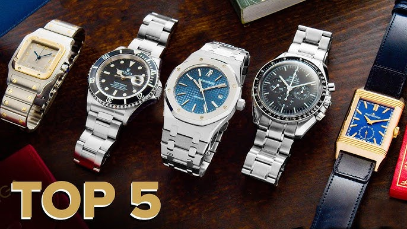
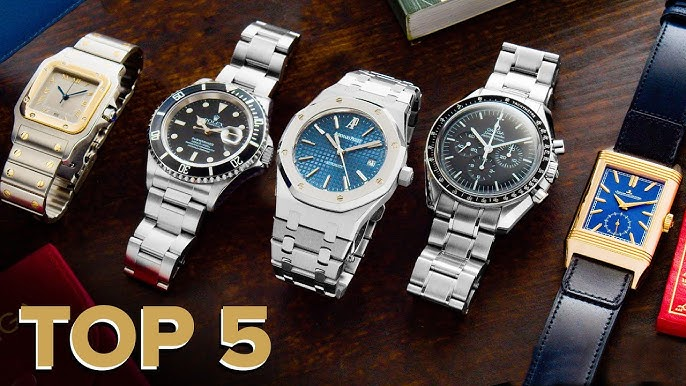

Rolex Watch
Rolex is a brand that is synonymous with luxury, craftsmanship, and innovation. Founded in 1905 by Hans Wilsdorf, Rolex has a long and storied history that has made it one.Rolex has a long and storied history that has madcomputing devices
BESTWIN WATCHES
Smartwatches are wearable computing devices resembling wristwatches that often connect to smartphones via Bluetooth. They offer a range of features beyond timekeeping, including notifications, fitness tracking, and communication capabilities.
REWARD WATCHES
Smartwatches are wearable computing devices resembling wristwatches that often connect to smartphones via Bluetooth. They offer a range of features beyond timekeeping, including notifications, fitness tracking, and communication capabilities.
MSETA WATCHES
Smartwatches are wearable computing devices resembling wristwatches that often connect to smartphones via Bluetooth. They offer a range of features beyond timekeeping, including notifications, fitness tracking, and communication capabilities.
EYKI WATCHES
Smartwatches are wearable computing devices resembling wristwatches that often connect to smartphones via Bluetooth. They offer a range of features beyond timekeeping, including notifications, fitness tracking, and communication capabilities.
GUCCI WATCHES
Smartwatches are wearable computing devices resembling wristwatches that often connect to smartphones via Bluetooth. They offer a range of features beyond timekeeping, including notifications, fitness tracking, and communication capabilities.